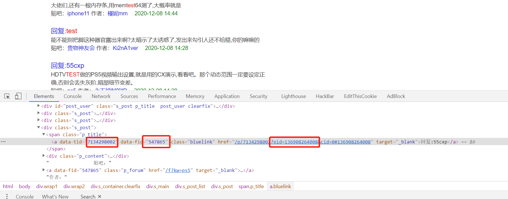
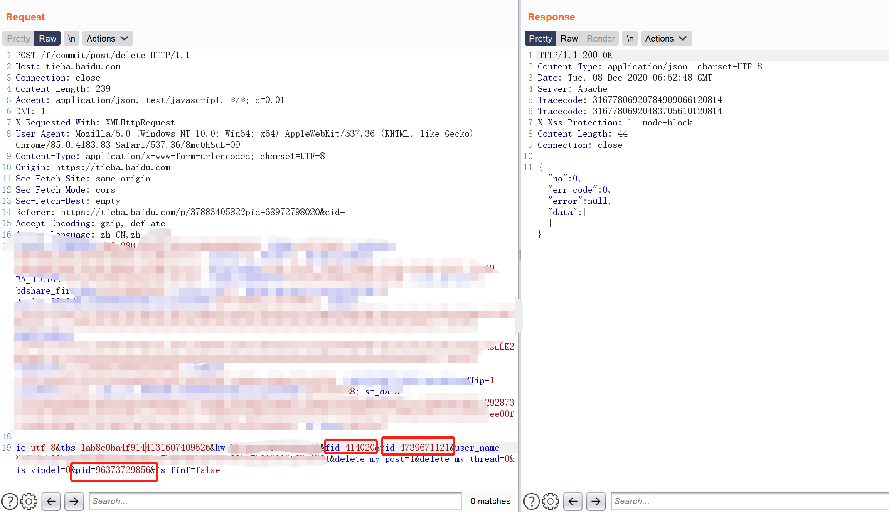

溯源
众所周知,百度有多个臭名昭著的jsonp漏洞长时间不修复,已经被蜜罐利用多年.
通过百度id溯源攻击者成为了某几个蜜罐厂商防守拿分大头.我也在这上面栽过一次.
jsonp劫持
互联网发展早期,前端有跨域的刚需但是缺少跨域的解决方案,因此,通过投机取巧的方式封装了script标签的跨域特性.用json
来交换数据,这种方式成为jsonp.
因为其投机取巧,因此并不安全.
cookie在jsonp中没有起到权限验证的作用,反而成为了jsonp的帮凶. 如果攻击者登录了百度,并且访问了蜜罐.蜜罐就可以通过嵌入html的js发起jsonp请求,这个请求因为cookie同站的特性,这个jsonp请求会自动带上cookie,获取到敏感信息.
这个过程和csrf很像,但是更严重,因为jsonp可以获取到返回数据.
jsonp是一个理应也已经被淘汰的技术.
百度已知jsonp漏洞
1 | https://mbd.baidu.com/newspage/api/getusername |
上面三个已修复
搜索引擎
这几个jsonp大多都能拿到百度id.然后通过百度id在搜索引擎搜索别人的历史记录,大多数情况下可以获取找到真实身份.
需要注意的是,google,百度,搜狗,bing等搜索引擎搜索的结果不相同,结合多个搜索引擎可以搜到许多意想不到的东西.
搜索引擎对百度知道的收录相对较好.
百度知道与快照
可能有些有安全意识的攻击者会删除百度知道的内容,不过刚才也说了,搜索引擎对百度知道的收录较好,因此大多数百度知道的网页都存在快照.只要能找到链接,就算内容别删除了,也可以在快照中看到.
贴吧高级搜索
因为贴吧的特性,搜索引擎并不能很好的收录全部信息,而贴吧又是上个时代最热门的社交工具,很多人都在这里发布了有关个人信息的敏感消息.
更可恶的是,贴吧的设计非常混乱,并且因为刘慈欣事件隐藏了2017年之前的帖子.
注意!是隐藏,不是删除. 隐藏只是搜索引擎搜不到,但是贴吧自带的高级搜索可以搜到.
https://tieba.baidu.com/f/search/adv
更更可恶的是,被隐藏的帖子还无法手动删除,并且没有任何举报,申诉的接口.
反溯源
隐私设置
不得不再一次吐槽百度的设计,明明是同一个账号,但是在手机端和web端的隐私设置是独立的.
贴吧:
手机端有下面三个选项我觉得比较重要:
1 | 公开地理位置信息 |
web端 http://tieba.baidu.com/i/i/profile中的选项
隐藏个人动态
百度知道:
https://zhidao.baidu.com/ihome/homepage/myaccount?tabpane=followset
个人页面展示设置
等等,每个app的web端和手机端都有一些不同的隐私设置,建议都看一遍.
加强隐私设置只是治标不治本的方法,因为百度的大多数内容都可以被搜索引擎抓取,因此就算设置了隐私,也可以通过搜索引擎搜索.
根本的解决方法还是删除内容.
一次性的解决方案是注销百度账号.
搜索引擎
不管是搜索引擎还是搜索引擎的快照都可以通过举报
百度: https://help.baidu.com/webmaster/add
google: https://support.google.com/legal/troubleshooter/1114905?hl=zh-Hans
其他搜索引擎也有类似的接口.自行申诉
还有一种方式,如果删除了某个百度知道提问或者回到,过一段时间搜索引擎会自然从搜索结果中删除.大概在半个月到一个月左右.
贴吧
最恶心的是贴吧的内容.
之前说到了贴吧隐藏了历史帖子,所以无法自行删除.只能抓包修改的方式删除.
首先通过高级搜索搜索自己历史发言.
右键检查

抓包删除需要三个值,分别是这里的data-tid,data-fid以及pid.
然后用burp抓一个没被隐藏的帖子的删除包
替换对应的三个值

发包即可,不管成功失败,返回包都是这个,因此只能通过再次搜索确认是否删除成功.
愿天堂没有百度